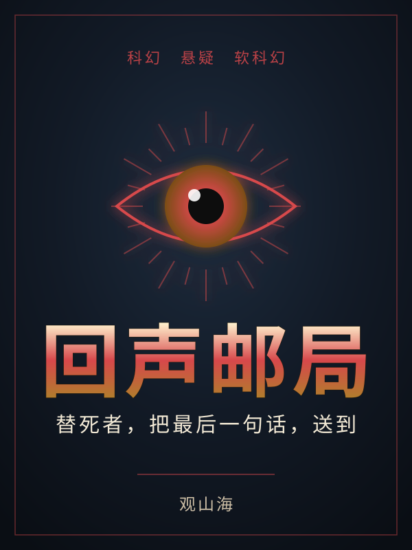
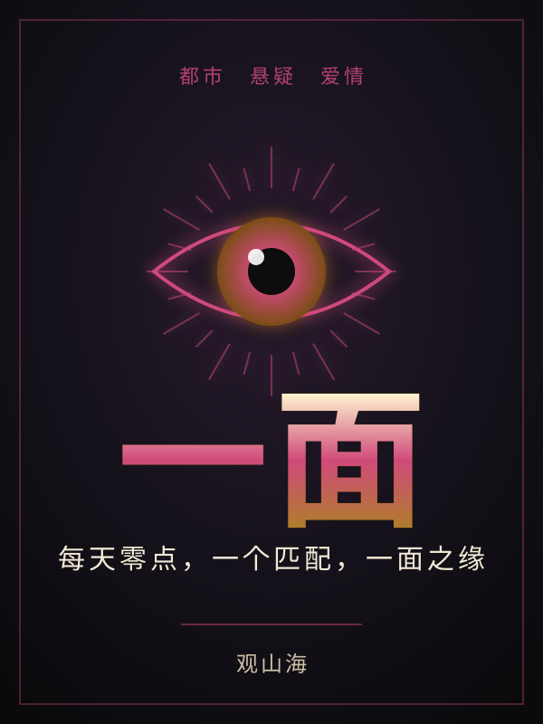

法眼
古玩城里扫了三年地的陈默，被人当透明人踩了三年。直到父亲留下的一面旧铜镜，让他开了一双能看穿万物的「法眼」——古董真伪、赌石成色、埋在地下千年的东西，一眼到底。鬼市捡漏，三百块的脏石头转手卖出三十八万；雅集之上，满堂专家看走眼的“国宝”，被他一句话钉死。可他偏要藏起这双眼，做回那个没人多看一眼的扫地的。因为他记得——十二年前，父亲也有这样一双眼；也正是这双眼，让父亲死在了一场“塌方”里。一镜，一眼，一桩压了十二年的旧案。当那些踩着尸骨登天的体面人重新盯上他时，陈默才懂：这双眼能看尽古玩江湖的真假，却要赌上两代人的命，去看一个谁都不敢看的真相。扮猪吃虎，鉴宝捡漏；藏锋十二载，今朝开眼。
已完结 · 38 章
前夫他装作不爱我
三年前，苏念在最痛的那一夜签了字，认定陆砚凉薄、薄情、从没真心爱过她。她去了京都学金缮——把摔碎的瓷一片片拼回来，裂缝里填金，碎得越狠，那道金线越亮。她想，人心要是也能这么补就好了。三年后她带着满身锋利回国，开了自己的修复工作室，第一笔大单的客户，偏偏是他。她冷着脸把价码翻了三倍，他眉都不皱就签了。她以为自己赢了，却在他珍藏的一件碎瓷底下，发现了一行不该出现的旧字迹——那是当年那场差点让她全家万劫不复的案子里，真正的签名。原来他不是不爱她。原来他装了三年的凉薄，是替她爹、也替她，把一口足以毁掉两个家的黑锅，独自背了整整三年。碎掉的东西，到底能不能重新拼回去？做了三年金缮的苏念，第一次怕自己补不好。
已完结 · 28 章
回声邮局
在这座城市，人死后七十二小时内，最后一个强烈的念头会凝成「残响」，被残响邮局采集、转译成一封信，送给来不及听见的人。共感者沈默做了六年投递员——别人靠仪器读信，他却要让逝者的悲伤，亲自漫过自己。三年前，恋人林岸「意外身亡」，最后一句话，他没能赶到去听。直到某夜，一封收信人是他、发信人是林岸、采集时间却在「七小时前」的信，出现在本不该存在的队列里，又在他眼皮底下被抹去。一封查无此件的信，一座永远亮着红灯的采集舱，一个名为「长明」的计划——当他顺着残响往下查，才发现有人把死者最后的念头，养成了一口永远打不干的井。
已完结 · 22 章
一面
被裁员的第三周，陆时的手机里凭空多出一个叫「一面」的 App。每天零点，它推送一个「今日匹配」——一张照片、一个地点、一句话：「她不会等你。迟到的人，没有第二次。」第一面，是坐在酒吧吧台、替他点好了酒、一眼叫出他名字的乔棠。他从没下载过这个程序，乔棠却仿佛，早就认识他。一面之缘的背后，藏着一桩他不敢想起的旧事，和一个「每天只够见一面」的残酷规则。当匹配一个接一个，他渐渐看清：这不是艳遇，是有人，借着这一面一面，把他一步步领向三年前那个夜晚的真相。
已完结 · 13 章